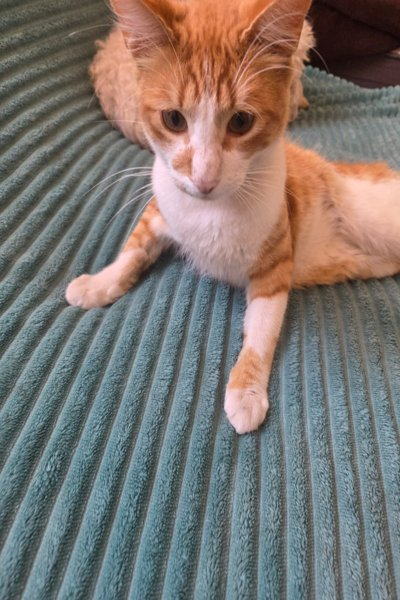
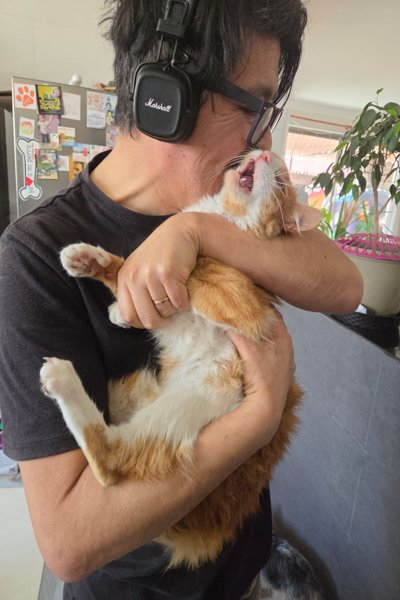
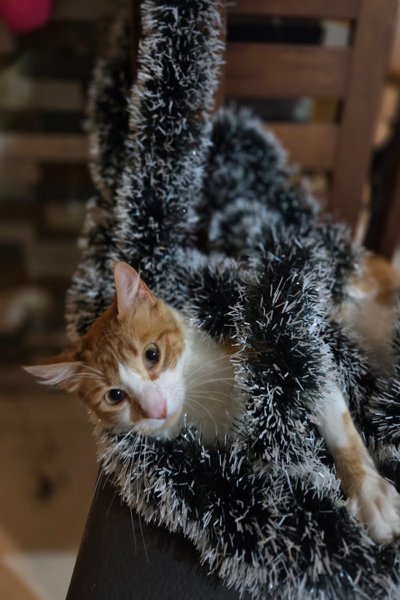
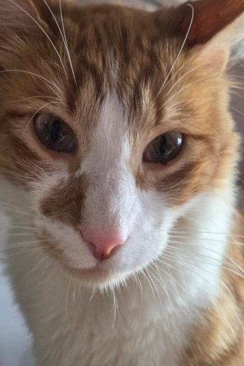

Scroll slowly and watch the Network tab in DevTools. Images will load only when they enter the viewport.
   About Helmut
Helmut is a charming and expressive orange-and-white cat with a gentle personality and bright, curious eyes. His soft, patterned coat and long white whiskers give him a playful yet elegant look. Helmut is deeply attached to his owner, Alonso, and their bond is easy to see—Helmut feels completely comfortable and safe whenever he’s with him. Whether he’s resting, exploring, or posing for a photo, Helmut always brings warmth and energy to every moment.